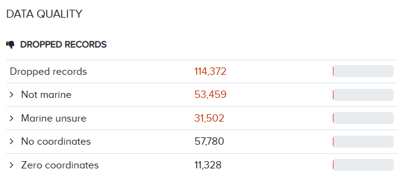

5 Data quality control
OBIS ignores records that do not meet a number of standards. For example, all species names need to be matched against an authoritative taxonomic register, such as the World Register of Marine Species. In addition, quality is checked against the OBIS required fields as well as against any impossible values. OBIS checks, rejects and reports the data quality back to the OBIS nodes, but never change records. The OBIS tier 2 nodes are responsible for the data quality and communicate errors back to the data providers. A number of QC tools are developed to help data providers and OBIS nodes:
For specific concerns regarding quality control checks or issues, please submit a GitHub ticket to the OBIS QC repository.
5.1 Why are records dropped?
Records can be dropped and therefore not published with your dataset for a number of reasons, including:
- The species is not marine
- The ‘scientificName’ or
scientificNameIDdid not match with WoRMS - Issues with coordinates:
- No coordinates given
decimalLatitudeordecimalLongitudeout of range
- The coordinate is zero
For each dataset published, a quality report is generated where the number of dropped records and other quality issues will be flagged. Such reports can also be found when searching for data in OBIS. For example, if we searched for ‘Crustacea’ records, the following data quality report is given:

We can see that >110,222 Crustacean records have been dropped, mostly due to records missing coordinates or species being flagged as non-marine. Because species are determined as being marine by WoRMS, we acknowledge that sometimes species are marked as not_marine erroneously.For specific advice on this topic, see the common QC issues page.
To minimize the number of records dropped, be careful when formatting your data so that you are meeting the requirements.
5.2 How to conduct Quality Control
Once you have formatted your data for OBIS, or have received a formatted dataset, it is important to run quality control checks before publishing the dataset on the IPT. The following is a list of various tools you can use to help you perform quality checks on your data:
- R package obistools
- EMODnet Biocheck
- Web UI built on obistools. This tool requires your dataset to be published on an IPT (e.g., a test IPT such as https://ipt.gbif.org/ where your dataset will not be harvested by GBIF or OBIS). Note you are required to have a login to access an IPT
- R package
- Lifewatch data services
- The US Integrated Ocean Observing System Standardizing Marine Bio Data Guide
- WoRMS taxon match tool
- Excel Conditional Formatting tool
- Excel > Home > Conditional Formating > Highlight cells Rules > Duplicate values…
- GBIF data validator
- Python library for OBIS QC developed by Canadian Integrated Ocean Observing System
- R package and function Hmisc:: describe
- Can give important summary statistics and identify numbers that don’t match
5.2.1 Conducting QC with obistools
To use obistools to conduct quality control, you can follow this general order:
- Check that the taxa match with WoRMS
- Check that all required fields are present in the occurrence table
- Check coordinates
- Plot them on a map to identify any points that appear outside the scope of the dataset
obistools::plot_map - Identify points with obistools::identify_map
- Check that points are not on land
obistools::check_onland - Ensure depth ranges are valid
obistools::check_depth
- Plot them on a map to identify any points that appear outside the scope of the dataset
- Check for statistical outliers which may have had data entry errors
- obistools::check_outliers_species and obistools::check_outliers_dataset
- Check that the eventID and parentEventID are structured correctly
obistools::check_eventids- Ensure all eventIDs in extensions have matching eventIDs in the core table
obistools::check_extension_eventids
- Ensure all eventIDs in extensions have matching eventIDs in the core table
- Check that eventDate is formatted properly
obistools::check_eventdate
5.2.2 QC with R package Hmisc
The R package Hmisc has the function describe which can help you identify any discrepancies in your dataset.
It will summarize each of your variables for a given data field. This can help you quickly identify any missing data and ensure the number of unique IDs is correct. For example, in an Occurrence table with 1000 records, there should be 1000 unique occurrenceIDs.
library(Hmisc)
library(Hmisc)
data<-read.csv("example_data_occur.csv")
describe(data)
12 Variables 407 Observations
------------------------------------------------------------------------------------------------------------------
CollectionCode
n missing distinct value
407 0 1 BIOFUN1
Value BIOFUN1
Frequency 407
Proportion 1
------------------------------------------------------------------------------------------------------------------
eventID
n missing distinct
407 0 27
lowest : BIOFUN1_BF1A01 BIOFUN1_BF1A02 BIOFUN1_BF1A03 BIOFUN1_BF1A04 BIOFUN1_BF1A05
highest: BIOFUN1_BF1M3 BIOFUN1_BF1M4 BIOFUN1_BF1M6 BIOFUN1_BF1M8 BIOFUN1_BF1M9
------------------------------------------------------------------------------------------------------------------
occurrenceID
n missing distinct
407 0 407
lowest : CSIC_BIOFUN1_1 CSIC_BIOFUN1_10 CSIC_BIOFUN1_100 CSIC_BIOFUN1_101 CSIC_BIOFUN1_102
highest: CSIC_BIOFUN1_95 CSIC_BIOFUN1_96 CSIC_BIOFUN1_97 CSIC_BIOFUN1_98 CSIC_BIOFUN1_99 This video shows how to use both obistools and Hmisc to conduct QC checks in R.